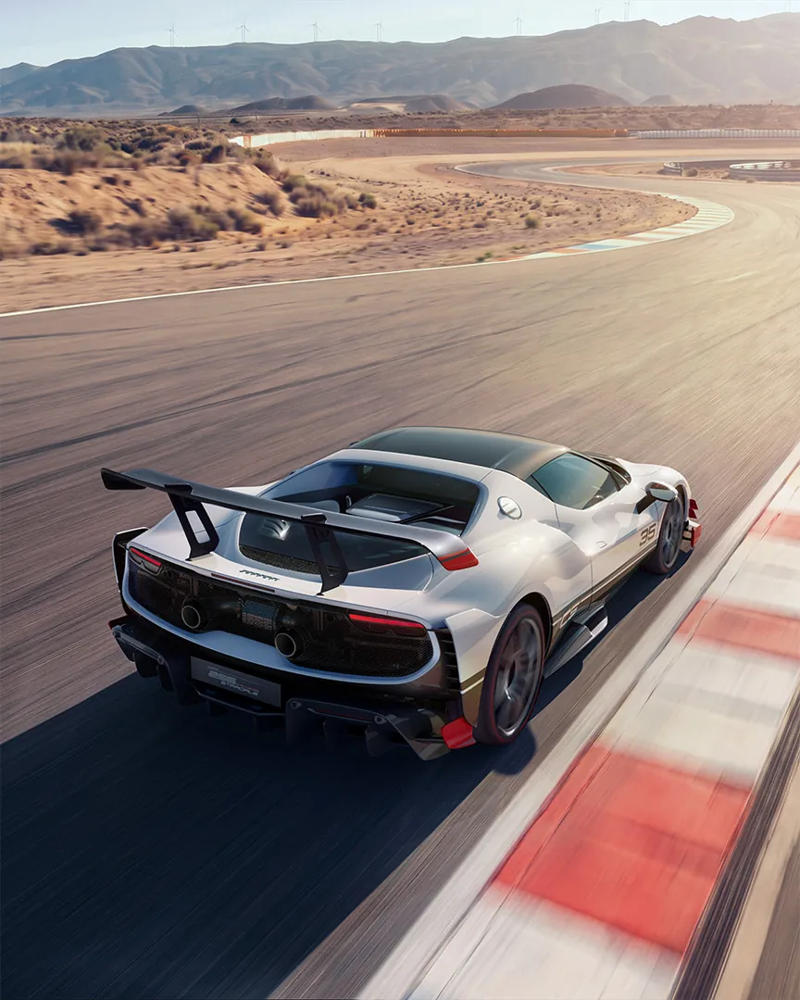
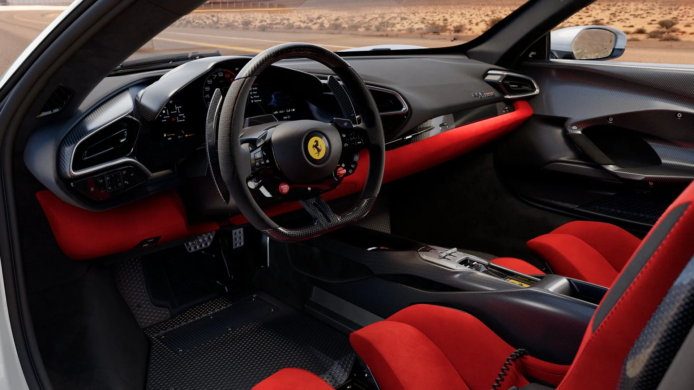

Powertrain
Twin-Turbo V6
- 2,992cc
- Displacement
- 2.8s
- 0–100 km/h
- 670cv
- Maximum power
- >300km/h
- Top speed

Design
Ferrari 296 Challenge Stradale
Form Follows Performance
Aerodynamics
Engineered for Downforce
Designed Without Compromise
Aerodynamics on the 296 Challenge Stradale prioritize downforce, stability, braking and cornering speed. At the front, the splitter works together with vortex generators to create aerodynamic load, while motorsport-derived aerodamper ducts stabilize downforce and help manage the extraction of hot air.
Beneath the car, an extensively redesigned underbody and splitter-to-floor transition increase suction. Three pairs of vortex generators at the front and two at the rear further enhance downforce. At the back, the elevated fixed wing uses aeronautically inspired endplates to manage wingtip vortices and increase aerodynamic efficiency while preserving rear visibility.


Driving Dynamics
Precision and Control
Every Input Matters
The 296 Challenge Stradale is engineered so that every input produces a direct response. Grip, balance and control are optimized to make the most of the available traction, while extensive weight reduction and precise calibration let the driver explore the car’s limits with confidence.
The braking system follows the same philosophy. Aero-design calipers, larger carbon-ceramic discs and advanced ventilation ducts deliver precise braking and control, while a redesigned brake pedal uses a shorter stroke to create the immediate feel expected of a racing car while retaining the modulation required on the road.

Interior
Driver Focused
Essential by Design
The interior can be configured in a more minimalist way, stripping away non-essential elements to evoke the feel of a racing car. A single-piece carbon-fiber door panel dispenses with the conventional armrest and storage pocket, reinforcing the car’s focused character.
Gallery